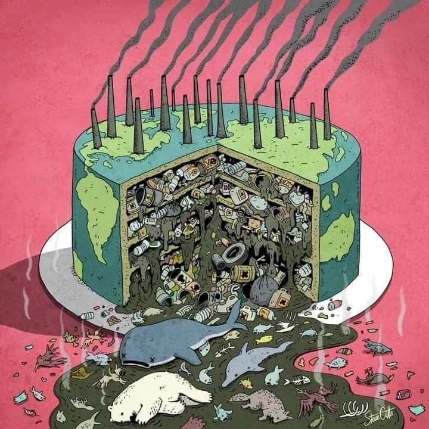
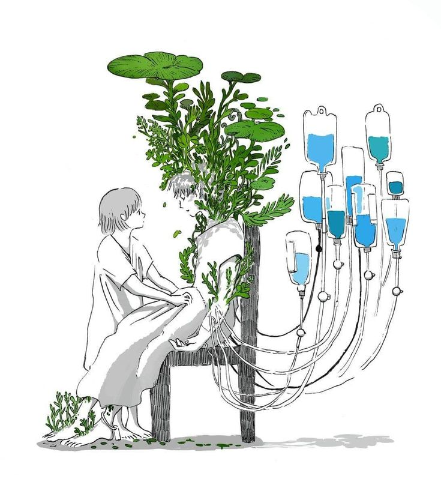
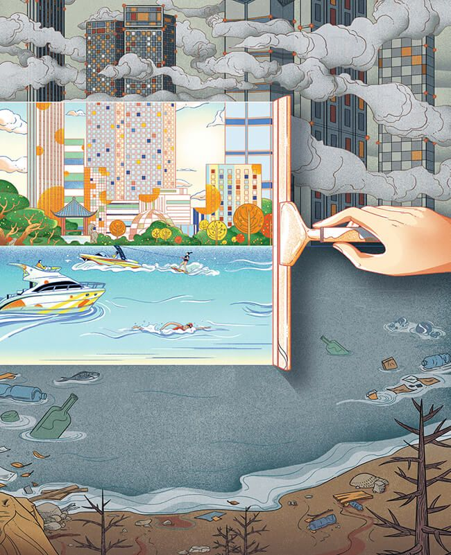
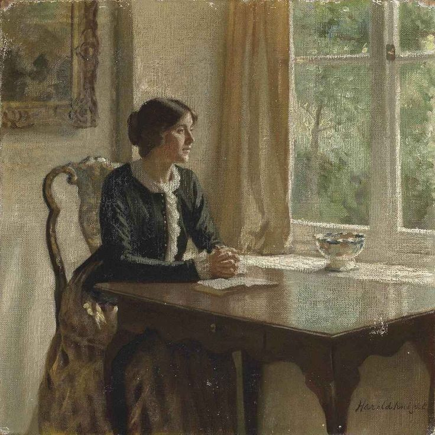

𝒮𝓊̈𝓇𝒹𝓊̈𝓇𝓊̈𝓁ℯ𝒷𝒾𝓁𝒾𝓇𝓁𝒾𝓀
.jpg)
Sürdürülebilirlik Nedir? | Çevre Kirliliği

Su Kirliliği

Hava Kirliliği

Toprak Kirliliği

Çevre Kirliliği Konusunda Sürdürülebilirliği Nasıl Sağlayabiliriz? - Öneriler

Sürdürülebilirliği Çevre Kirliliği Konusunda Sağlayabilmek İçin : - Planlar Ve Hedefler

Sürdürülebilirlik Konusunda Yapılmış Faaliyetler,
Uygulamaya Geçirilmiş Çözüm Önerileri
Ve Gelişmeler
Uygulamaya Geçirilmiş Çözüm Önerileri
Ve Gelişmeler
10000+
Bilinçli İnsan200+
Kuruluş / Şirket166+
ÜlkeSürdürülebilirlik Konusunda Sıkça Yanlış Anlaşılan Durumlar
Bu tarz düşünceler tabii ki de doğru olduğu söylenemez. En küçük adımlarla bile başlanılsa kelebek etkisi gibi çoğalacak bir konudur, sürdürülebilirlik. Mesela, çeşmelerinizin altına yerine uyacak büyüklükte kovalar koyarak suyun boşa akmasını önleyerek başlayabilirsiniz; suyla dolmuş kovaları da çiçek sulamak vb. durumlar için kullanabilirsiniz, böylece hem israfı önlemiş hem de karbon ayak izinizi de bir nebze küçültüp dünyaya katkıda bulunmuş olursunuz.
Kesinlikle, evet. Çünkü bu konu direkt olarak dünyadaki tüm insanları ilgilendirdiğinden herkes ne ekerse onu biçiyor, gelecekte sağlık açısından daha huzurlu ve mutlu olabilmek için uğraşmaya değecek bir konu.
Bu sorunun makul olabilecek tek cevabı: ömür boyu olacaktır, çünkü sürdürülebilirliğe olan gereksinimin ne kadar süreceği belli olmadığından insan baştan kendini buna göre şekillendirip hayatını yönlendirmelidir.
